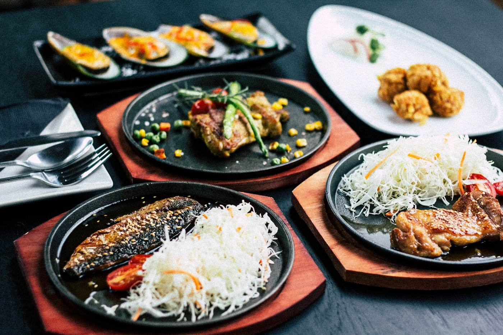
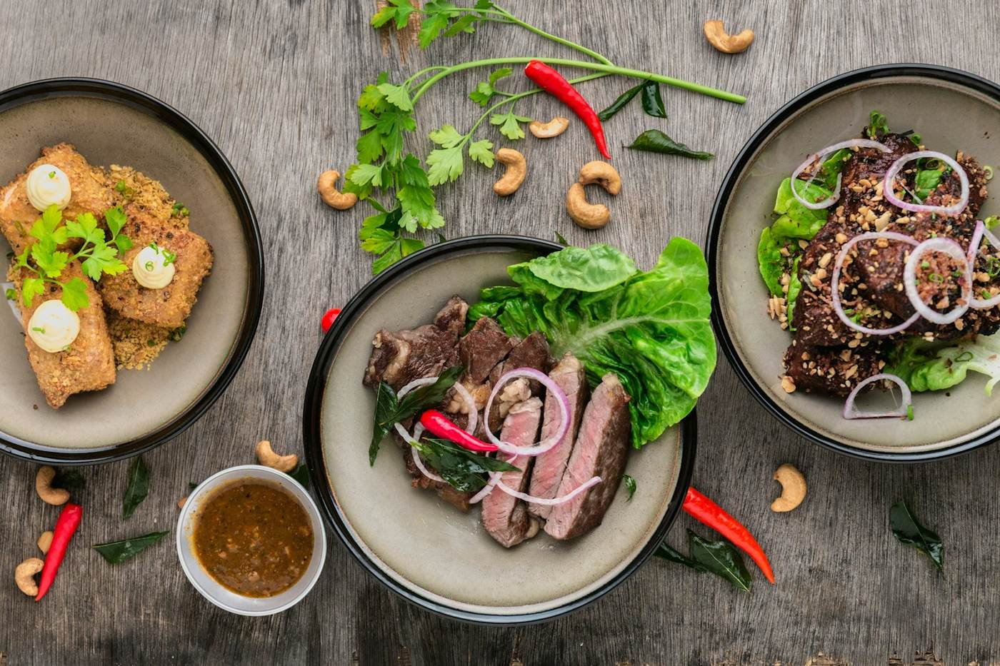
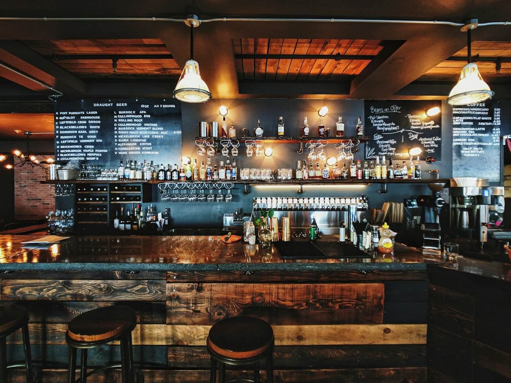
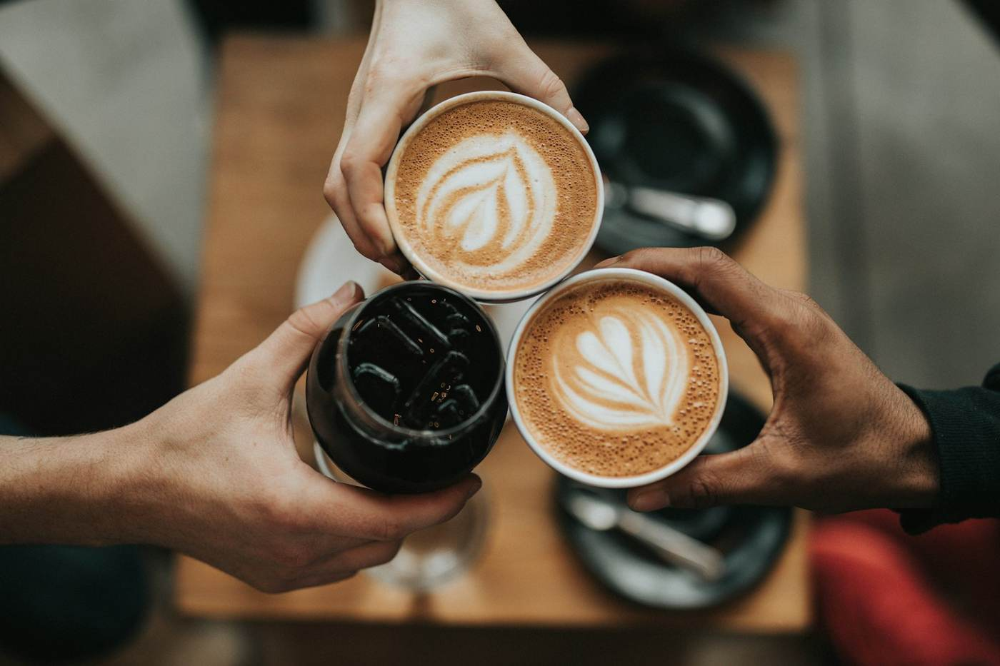
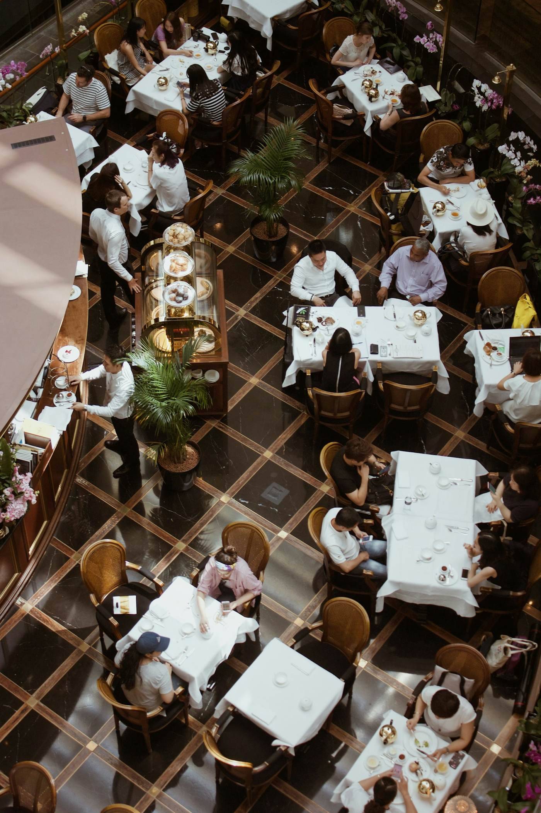

01Sushi bar · Porto
Sushi de autor e omakase ao balcão, com peixe escolhido todas as manhãs e arroz temperado na hora.
02Menu
Do balcão para ti
01Omakase
A escolha do chef, servida ao balcão.

- Omakase 12 peças · 60 min45 €
- Omakase 18 peças · 90 min70 €
- Harmonização de saké18 €
02À carta
Para partilhar ou levar.

- Combinado Kaizen26 €
- Uramaki de salmão braseado12 €
- Sashimi de atum15 €
03Quentes e doces
Para completar a refeição.

- Gyoza de porco7 €
- Ramen de miso13 €
- Mochi de chá verde5 €

03O balcão
Pouco, mas perfeito.
Kaizen quer dizer melhoria contínua. É assim que trabalhamos: poucas peças, muito rigor e respeito pelo produto.
O balcão tem doze lugares, para que o chef possa servir cada peça no momento certo.
Saber mais04Princípios
Porque o Kaizen
Peixe do dia
Selecionado todas as manhãs no mercado.
Arroz no ponto
Temperado e servido à temperatura certa.
Balcão de 12 lugares
Uma experiência próxima do chef.
Take-away
Combinados prontos em 30 minutos.
05Galeria


Palavras de clientes
“O omakase é uma experiência. Cada peça melhor que a anterior.”
“O sushi mais fresco que comi no Porto.”
“O take-away é rápido e muito bem apresentado.”
Testemunhos de exemplo. Substitui pelos testemunhos reais dos teus clientes.
Omakase? Reserva já.
O balcão tem só 12 lugares por sessão. Reserva com antecedência.
Reservar balcão06Contacto
Reserva o teu lugar.
Sessões de omakase às 19h30 e às 21h30.
Rua do Almada, 320, Porto
- Terça a sábado19h00 – 23h30
- Domingo e segundaEncerrado